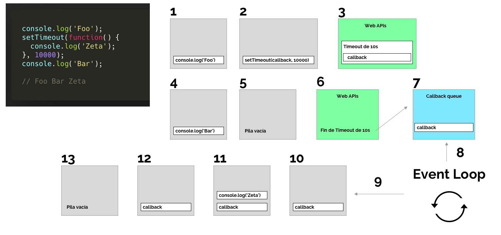
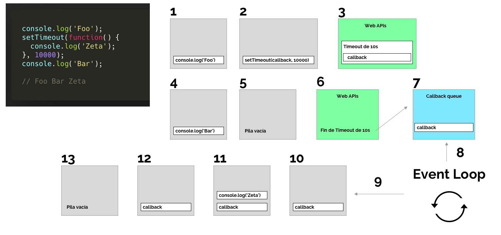

JavaScript trabaja sobre un modelo asincrono y no bloqueante y tiene un loop de eventos implementados de un solo hilo (Single Thread) para operaciones de entrada y salida. Gracias a esto JavaScript es altamente concurrente.
 

Son aquellos que se llevan mas tiempo de procesar "x" tarea en nuestro CPU. Por ejemplo, al entrar en un error logico en una estructura repetitiva podemos causar un bucle y este se vera en la obligacion de consumir la memoria de nuestro navegador, dicho proceso empezara a trabajar el CPU y llegar a causar un crasheo porque nunca termina el bucle.
Operaciones de entrada y salida (input, output), se ven la mayor parte esperando una peticion a un recurso que han solicitado. Por ejemplo, que enviemos un formulario en nuestra pagina web a un servidor y estamos esperando una notificacion en donde nos indique que se ha recibido la informacion satisfactoriamente.
Operaciones concurrentes, son aquellas donde una o mas tareas se ejecutan progresivamente, al terminar una tarea se ejecuta la siguiente inmediatamente como en la imagen, ó puede ser que una tarea este por ejecutarse en un lapso de 10 segundos, esa tarea se mantiene a la espera de su ejecucion mientras que las demas tareas concurren progresivamente, asi como el ejemplo de la siguiente imagen.

Operaciones paralelas, son aquellas tareas que se ejecutan al mismo tiempo o al iniciar "x" proceso.
Operaciones bloqueantes son aquellas tareas que se ejecutan progresivamente pero que NO devuelven el resultado al hilo principal hasta que se terminen de realizar todas las tareas.
Operaciones NO bloqueantes, son aquellas tareas que al terminar mandan su resultado al hilo principal.
Operaciones sincronas son aquellas que devuelven el resultado al presente, osea al instante, en cambio las Operaciones Asincronas devuelven el resultado en un futuro, osea en un intervalo de tiempo.